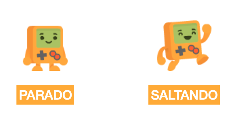
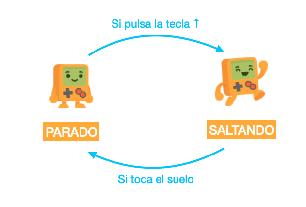
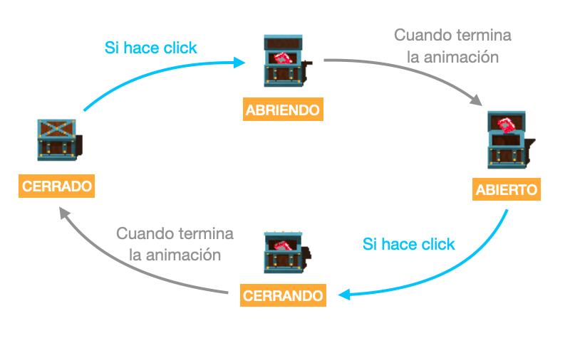
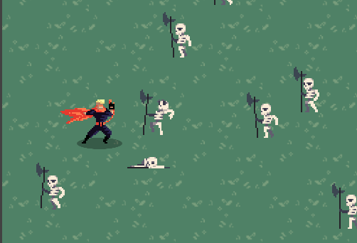

Дуже поширеним завданням у розробці ігор є завдання змусити акторів показувати анімацію та реагувати відповідно до певних режимів: стрибати, ходити, стояти на місці тощо.
Для цих речей використовують механізм автоматів і станів.
Актор може перебувати в одному стані за раз і може переходити в інші стани лише через переходи.
Наприклад, уявімо актора гри-платформера, який може робити лише дві речі: стрибати та стояти на місці:

Якщо ми хочемо додати цього персонажа до гри, ми повинні мати техніку, яка дозволить виконувати будь-яку з цих двох дій, але за певних умов. Тобто, актор міг стрибати лише тоді, коли його ноги стояли на землі (тоді, коли він перебував у стані "parado" - персонаж стоїть), а коли він стрибнув, він зупинявся, коли торкався землі:

На малюнку продемонстрована схема, яку називають діаграмою стану або автоматом, і хоча це може здатися простою графічною моделлю, правда полягає в тому, що вона дуже корисна під час написання коду в нашій грі.
Продовжуючи наш приклад, персонаж повинен мати два стани. Почнемо з першого стану "parado" - персонаж стоїть:
Щоб створити стан, нам просто потрібно відредагувати код актора та призначити значення властивості "estado" (стан), а потім створити два методи, які будуть викликатися залежно від того, в якому стані перебуває актор:
class MiActor extends Actor {
iniciar() {
this.estado = "parado";
}
actualizar() {
}
parado_iniciar() {
this.animacion = "parado";
}
parado_actualizar() {
// код, який буде виконуватися 60 разів за секунду
// коли актор знаходиться в стані "parado".
}
}Якщо ми створюємо стан "parado", необхідно викликати методи, які ми маємо додати до класу parado_iniciar та parado_actualizar.
Тепер для наступного стану під назвою "saltando" (стрибки) нам доведеться додати цей код:
class MiActor extends Actor {
// [... код вище ...]
saltando_iniciar() {
this.animacion = "saltando";
}
saltando_actualizar() {
}
}Між станами "parado" і "saltando" можна переходити з одного стану в інший.
Наприклад, якщо ми хочемо, щоб персонаж міг "saltando" (стрибати), але лише тоді, коли він "parado" (стоїть на місці) і натиснута стрілка вгору на клавіатурі, ми можемо написати наступне:
class MiActor extends Actor {
// [... код вище ...]
parado_actualizar() {
if (this.control.arriba) {
this.estado = "saltando";
}
}
}Тобто, просто присвоївши значення змінній estado ми здійснюємо перехід із стану "parado" (стояти на місці) у "saltando" (стрибати).
Перегляньте кілька прикладів, які включають приклади автоматів, найпростіший називається "automata-cofre", який просто показує актора у вигляді скрині із 4 станами:

Ще один дуже цікавий приклад називається "automata-contra-calaveras", де гравець може керувати персонажем, який має лише 3 стани: "parado" (стояти на місці), "caminando" (ходити) і "golpeando" (зробити удар):
